Designskiss, utkast 3
Critical ST8
Ett co-op-spel online där upp till tre spelare delar på ett rymdskepp. Det går också att spela ensam. Ni flyger, slåss, dockar och bordar vrak och stationer för att komma över bränsle, krediter och stjärnkartor. All text i spelet är på engelska.
Ett varv i spelet
Spana
Använd scanner, sonder och bojar för att hitta vrak, stationer och pirater.
Slå ut
Strid i rymden. Ett utslaget skepp blir ett vrak som går att borda.
Bryt er in
Docka och klara ett inbrottsspel på tid.
Borda
En eller flera går in och lootar medan resten vaktar skeppet.
Uppgradera
Bygg om skeppet vid en station som har shipyard.
Hoppa
Använd en stjärnkarta för att hoppa till nästa sektor.
Inget av momenten pausar spelet. Världen fortsätter medan ni handlar, bryter er in och byter post.
Ute i rymden
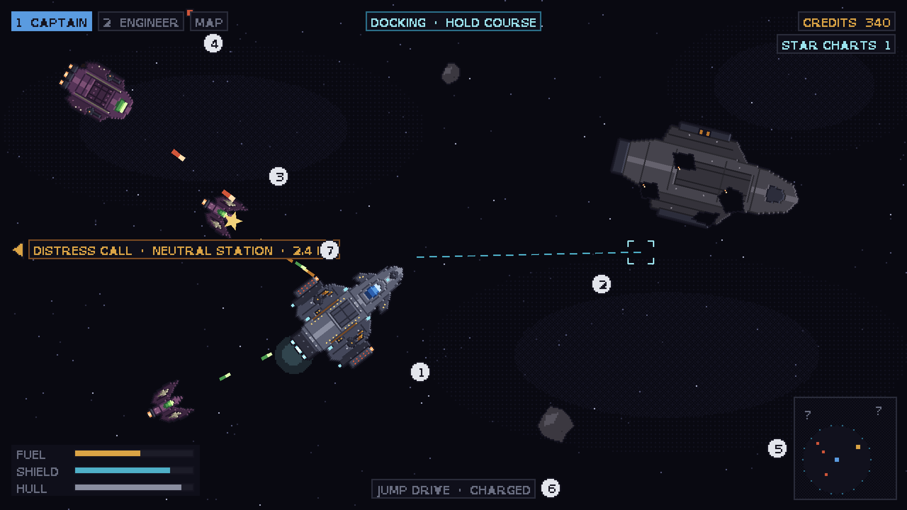
- Fregatten. Ert skepp. Hela besättningen delar samma bränsle, sköld och skrov.
- Dockningshjälp. Captain håller kursen mot porten på vraket.
- Pirater. Gunner sköter alla vapen medan Captain flyger.
- Flikar. Byt vy med en knapp. Den röda pricken betyder att Engineer-posten behöver tillsyn.
- Minikarta. I rymden har ni alltid fri sikt. Dimman finns bara på kartan.
- Hoppmotorn. Redo när ni har en karta och bränsle nog.
- Nödanrop. En pil visar riktning och avstånd. Ni väljer själva om ni åker dit.
Posterna
Tre poster som delas ut i lobbyn. Varje post har sin egen vy av samma värld.
| Post | Sköter | Ansvar |
|---|---|---|
| Captain | Flyger, dockar och skickar ut Darts. | Avgör när skeppet lägger ut och när det hoppar. |
| Gunner | Alla vapen. | Håller pirater borta, även när skeppet ligger dockat. |
| Engineer | Energi och reparationer. Scanner och sonder. | Väljer vad skeppet ska vara bra på just nu. |
- Tre spelare: en post var.
- Två spelare: Captain och Gunner. Engineer-posten delas och kan öppnas av båda.
- En spelare: börjar som Captain och växlar själv mellan posterna.
- En post som lämnas fortsätter som den ställdes in.
- Den som går in för att loota lämnar sin post ledig för någon annan. När personen är tillbaka på skeppet får den tillbaka posten.
- Att hoppa in mitt i ett pågående spel kommer senare.
Engineer: energi och reparationer
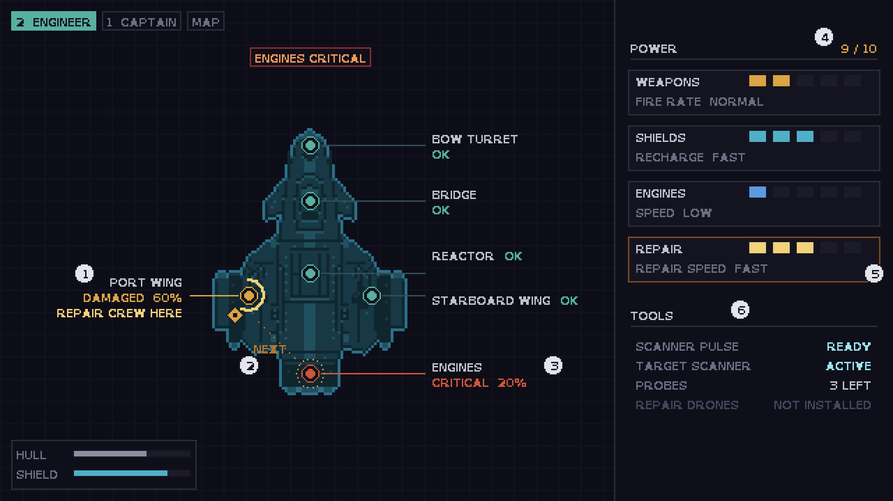
- Skadepunkter. Skeppet visas som en ritning. Varje punkt kan vara hel, skadad eller kritisk.
- Reparationsteamet. En symbol som Engineer flyttar mellan punkterna. Den streckade linjen visar nästa punkt i kön.
- Kritisk skada. Här är motorerna nästan utslagna, men teamet är upptaget på annat håll.
- Energin. Fördelas mellan fyra system: vapen, sköld, motorer och reparation.
- Reparation. Mer energi hit lagar fortare, men tas från vapen, sköld eller fart.
- Verktyg. Scannerpuls, target scanner och sonder. Fler tillkommer med uppgraderingar.
Kartan och stjärnkartorna
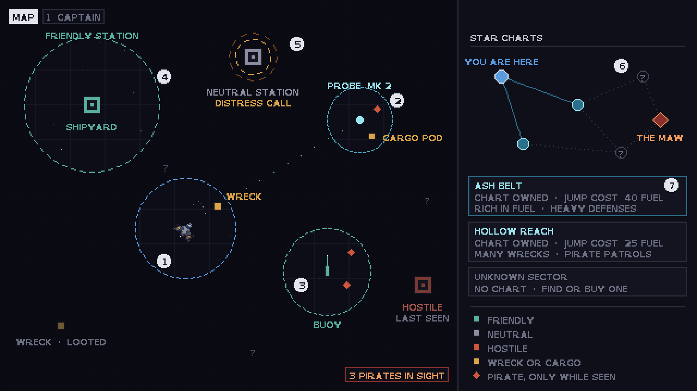
- Skeppets radar. En liten cirkel som alltid följer med.
- Sond. Flyger dit Engineer pekar och ser längs vägen.
- Radarboj. Ligger kvar tills pirater skjuter ner den.
- Vänlig station. Har inbyggd radar. Den här har också shipyard.
- Ute i dimman. Stillastående saker ni har sett ligger kvar som senast kända läge.
- Sektorerna. Linjer visar vart ni kan hoppa. Frågetecknen kräver en karta.
- En stjärnkarta. Visar vad hoppet kostar och antyder vad som väntar.
- Kartan är gemensam och kan öppnas av alla.
- Skepp syns bara på kartan så länge någon eller något faktiskt ser dem.
- Stjärnkartor hittas i vrak och stationer, eller köps.
- Ett hopp kostar bränsle. Motorn tar en stund att ladda och alla måste vara ombord.
- Sektorerna blir svårare. Den sista innehåller en Cruiser som boss.
Stationer
| Läge | Vad ni gör där |
|---|---|
| Vänlig | Tankar gratis, lagar, handlar och får radartäckning. |
| Neutral | Tankar och handlar mot betalning. |
| Fientlig | Slåss, bryter er in och bordar. En station ni tar över blir vänlig. |
- Shipyard. Skeppet kan bara byggas om vid en station som har shipyard. Alla stationer har inte det.
- Nödanrop. En vänlig eller neutral station som anfalls av pirater kan kalla på hjälp.
- Belöning. En neutral station ni hjälper förblir neutral, men ger rabatt under en tid och låter er använda dess shipyard så länge.
- Pirater är fristående och aggressiva mot alla.
Bordning
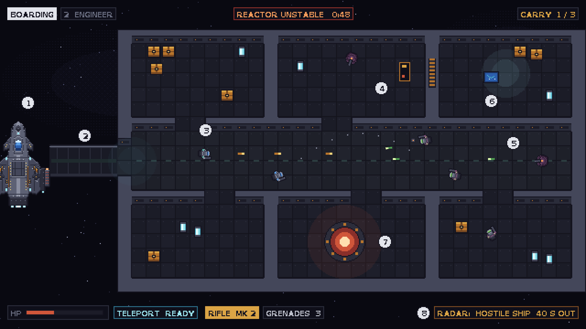
- Fregatten. Den som stannar sköter vapen, sköld och radar.
- Dockningstunneln. Enda vägen in och ut. Allt loot bärs hit.
- Bordarna. Samma vinkel och styrning som i rymden, fast till fots.
- Låst dörr. Det bästa lootet ligger bakom ett eget inbrottsspel.
- Vakter och kanontorn. Därför behöver bordarna egna vapen och granater.
- Stjärnkarta. Det mest värdefulla fyndet.
- Reaktorn. När nedräkningen är slut sprängs vraket.
- Enemy alarm. En uppgradering som varnar bordarna när pirater närmar sig skeppet.
- Vem som bordar bestämmer ni genom att prata. Spelet kräver ingen bekräftelse.
- Så länge skeppet ligger dockat kan vem som helst gå in eller ut när som helst, till exempel för att hjälpa den som redan lootar.
- Den som nästan dör teleporteras hem och kan inte gå in igen under samma bordning.
- När alla är tillbaka på skeppet får alla tillbaka sitt förlorade liv.
- Teleportern måste laddas om innan spelaren kan borda nästa gång. Ni väljer mellan att vänta och att skicka in färre.
- Mål är olika svåra att borda. En scanner visar hur svårt det är innan ni går in.
Inbrottet
Varje typ av mål har sitt eget inbrottsspel på tid. De andra håller skeppet stilla och pirater borta under tiden.
| Mål | Inbrottsspel | Om ni misslyckas |
|---|---|---|
| Utslaget skepp | Koppla förbi dockningslåset. Vrid brickorna så att strömmen når låset. | Vraket sprängs. Lootet försvinner och ert skepp tar skada. |
| Fientlig station | Knäck koden. En spelare ser koden och läser upp den, en annan matar in den. | Stationen slår tillbaka. Små utposter självförstörs i stället. |
| Fraktcontainer | Pricka låset. Stoppa visaren i rätt läge tre gånger i rad. | Larmet går och lockar dit pirater. |
Skeppet och dess klasser
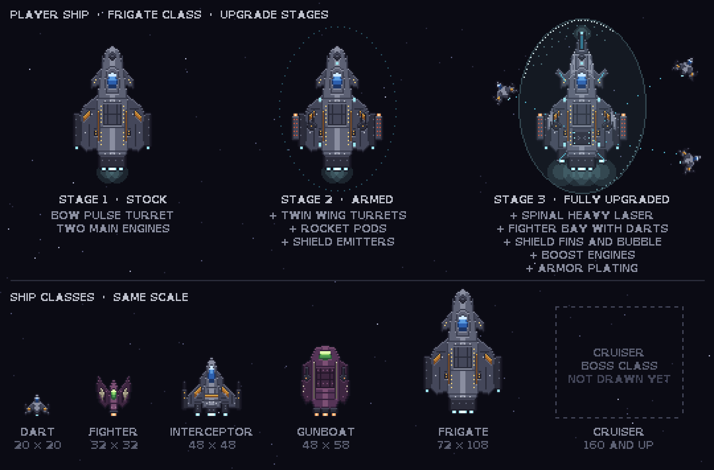
- Spelarskeppet är alltid samma fregatt. Det ni köper byggs på utanpå och syns.
- Loot ger bränsle och krediter. Bränslet driver skeppet och betalar hoppen.
Nya skeppsklasser
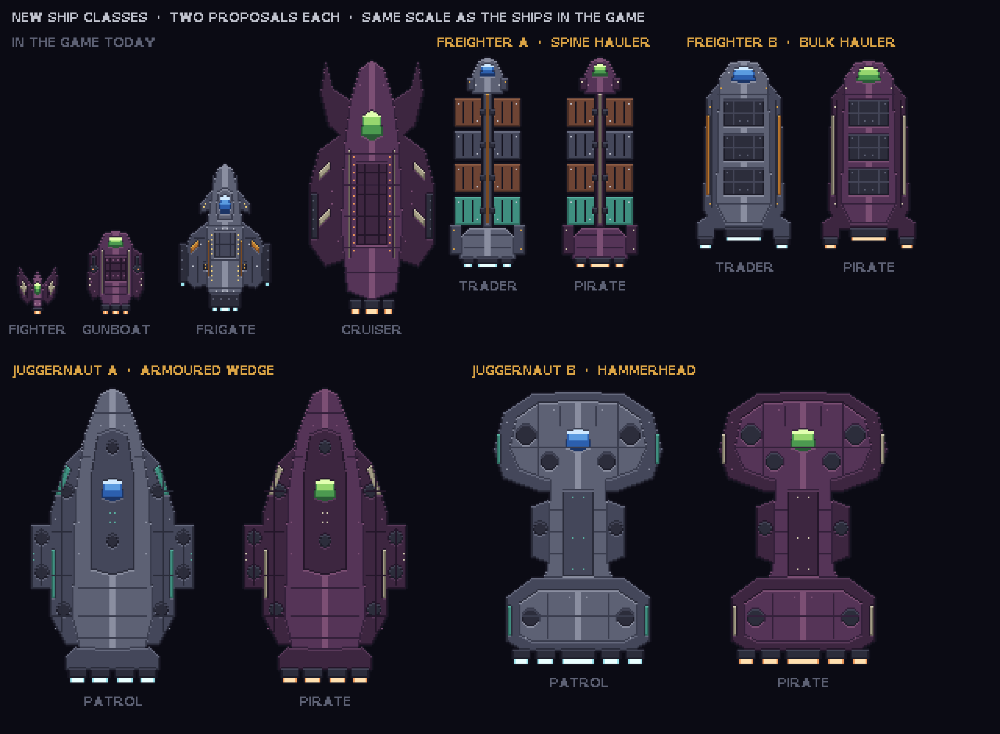
- Freighter är ett långsamt lastskepp som bär containrar på en ryggrad. Designen är vald.
- Juggernaut är ett sällsynt, långsamt och tungt bestyckat krigsskepp. Formen är ett kantigt ägg med pansar och monterade kanontorn, och det är mindre än Cruisern. Förslag E, med smala änden fram, är valt.
- Färgerna visar vem som flyger skeppet: grått med ockra för handelsskepp, grått med turkos för patruller och plommon för pirater.
- Inget av detta är inlagt i spelet än.
Utseende utanpå och inuti (förslag)
Det här är förslag att säga ja eller nej till. Inget av det är inlagt i spelet än.
Vrak efter skeppsklass
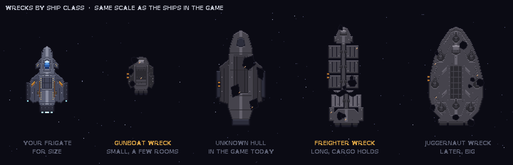
- Varje vrak är skeppet det en gång var, grått och sönderslaget. Då känner man igen vad man har framför sig.
- Storleken säger vad som väntar: en Gunboat har några få rum, ett fraktskepp en lång rad lastrum.
- En nedskjuten Gunboat lämnar redan i dag ett vrak. Med det här ser vraket ut som en Gunboat.
Stationer efter sida
![Sex stationer med samma ringform. Den egna har besättningens turkosa färg. Stationen utan faktion är dagens. Charter har containrar runt ringen, en parabol och tända fönster. Wardens har pansarplåtar, två extra kanonplattor och en radarmast. Drifters är rostbrun med lappade plåtar, solpaneler och en skrotbom. Piraternas är plommonfärgad med taggar och röda ljus. Under visas en dockningsarm infälld, utfälld och med fregatten dockad, och fem ljusfärger på armens spets: grönt för vänlig, vitt för neutral, gult för avvaktande, släckt för stängd och rött för fientlig.](img/stations.png)
- Alla har dagens ringform. Färg, märken och påbyggnader visar vems stationen är.
- Dockningsarmarna är infällda och fälls ut när ett skepp kommer in för att docka.
- Ljusen på armarnas spetsar visar hur stationen behandlar besättningen. Färgen på skrovet behöver då inte göra det.
Rum efter sida, och i lockdown och larm
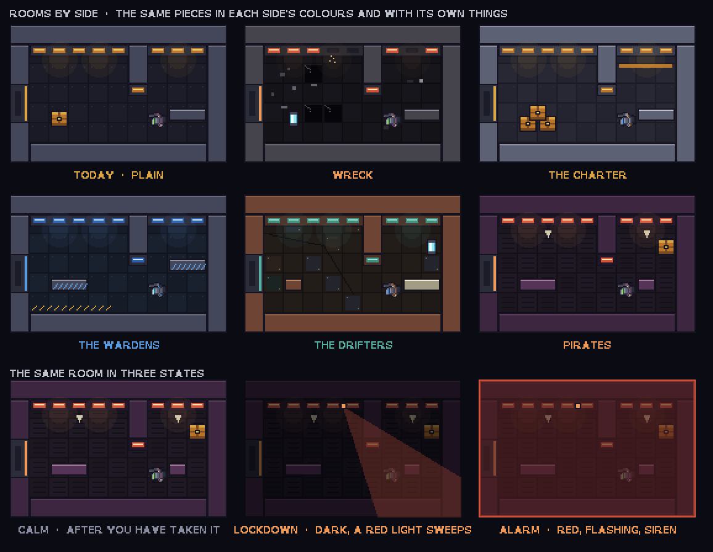
- Rummen byggs av samma bitar hos alla, i varje sidas färger och med dess egna saker. Lamporna bär sidans färg.
- I varje rum finns något att ta skydd bakom.
- Lockdown är mörkt med ett rött ljus som sveper. I larm blinkar lamporna, ljuskäglor snurrar och en ram runt bilden blinkar, så att skillnaden syns direkt.
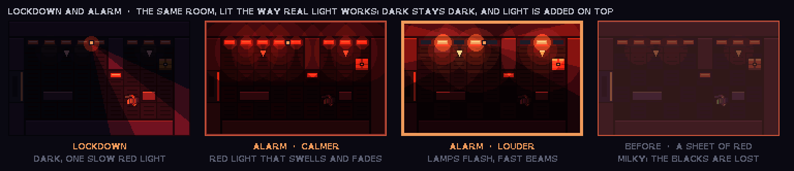
- Larmet som är valt: varannan lampa blinkar i taget, ljuskäglor snurrar snabbt och ramen runt bilden blinkar.
- Ljuset räknas som riktigt ljus: rummet filtreras av färgen på ljuset som finns, och sedan läggs lampor och ljuskäglor ovanpå. Det som är svart förblir svart, och bilden blir inte mjölkig.
- Mörkret görs lättare att läsa på tre sätt: de mörkaste tonerna dras isär innan ljuset räknas, som när ögat vänjer sig. Spelaren bär en egen lampa. Och det som spelar roll, vakter och loot, har ett eget litet ljus.
- Blinkande rött ljus kan utlösa anfall hos personer med ljuskänslig epilepsi. Larmet blinkar därför högst två gånger i sekunden, och spelet bör få en inställning som dämpar blinkandet.
Planlösningar som görs nya för varje omgång
![Planritningar. Överst sex vrak i tre former: Gunboat, okänt skrov och fraktskepp, två exempel av varje. Varje vrak har en korridor längs mitten, rum på båda sidor, maskinrum i aktern, brygga i fören och luftsluss i sidan. Några rum är uppslitna mot rymden. Under dem tre stationer: en ring runt ett nav, fyra dockningsarmar med luftsluss i spetsen, rum mellan ringen och navet, och ett nav med mainframe som bara nås genom en eller två personaldörrar med kamera och vakt. En streckad ruta visar hur mycket som ryms på skärmen.](img/floor-plans.png)
- Ett vrak är långt och smalt som skeppet det var. En station är en ring runt ett nav, och man kommer in genom den arm man dockade vid.
- Samma plats ser likadan ut hela omgången, men varje ny omgång får nya rum och vägar.
- Den streckade rutan visar vad som ryms på skärmen. Insidorna blir större än så, och kameran följer spelaren.
- På stationer är ringen och rummen längs den öppna för besökare. Navet med mainframen och valvet är bara för personal, och ibland finns en väg dit, ibland två.
- Varje planlösning kontrolleras: vägen från luftslussen till valvet eller mainframen ska vara öppen. Bilden är gjord av ett verktyg som har gjort och kontrollerat 1200 planlösningar.
Ljus
Ljuset inne i vraken och ljuset i rymden är byggda och påslagna. Ljuset i rymden godkändes 2026-11-15.
I vraken (byggt)
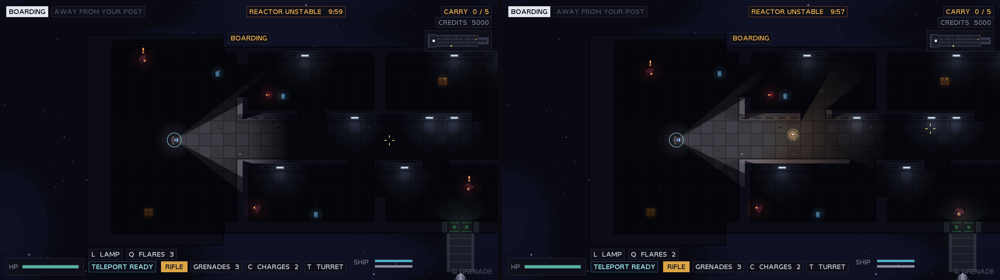
- Vraket är strömlöst. Man ser det närmaste runt sig och det ficklampan lyser på. L släcker och tänder den.
- En flare kastas med Q, studsar mot väggar och lyser upp ungefär ett rum i en halv minut. Den falnar och flimrar långsamt mot slutet.
- Väggar stoppar ljuset och kastar skuggor. Skott och explosioner lyser upp det som är nära.
- Vakter och turrets har ett eget rött ljus, så att inget skjuter osett. Nödlamporna är kallt vita: rött ljus betyder alltid att stället räknar besättningen som fiende.
- Bilden ritas som om den vore fullt upplyst och filtreras sedan av ljuset som finns. Det som är svart förblir svart.
Styrraketer (byggt)
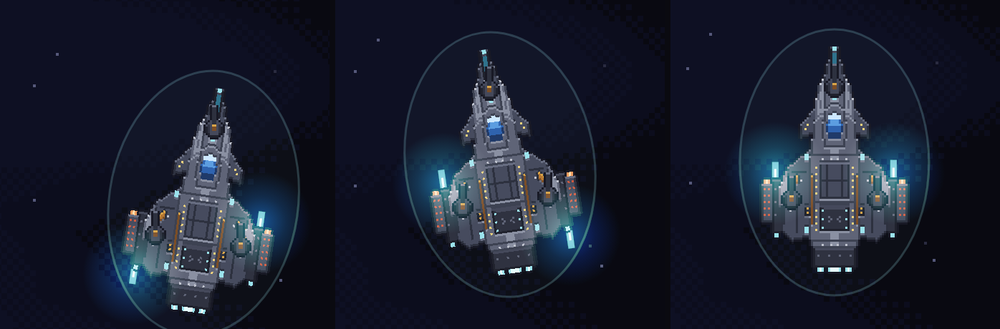
Lågor (byggt)
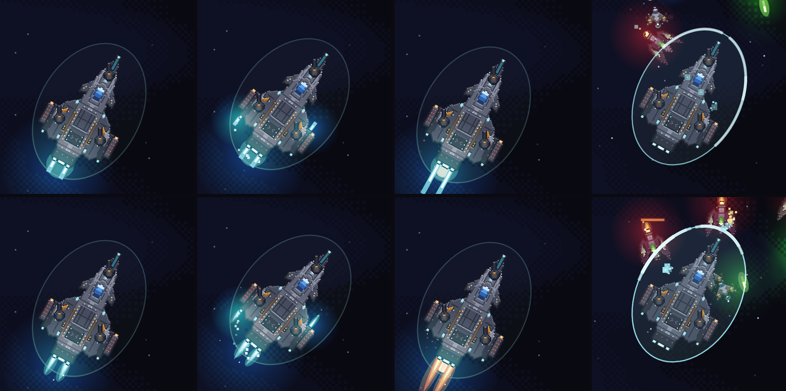
I rymden (byggt)
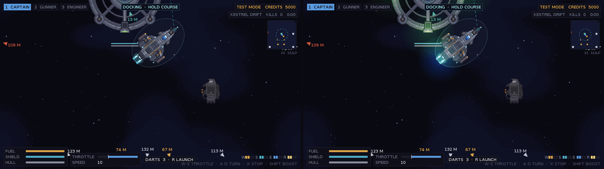
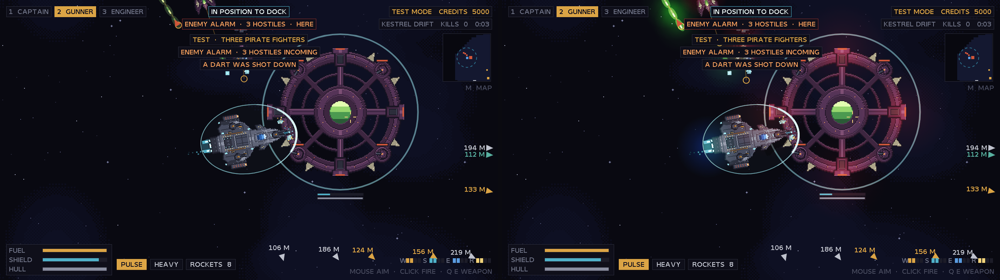
- Ljusen på stationens armar faller på stationen själv, i färgen som säger hur den behandlar besättningen. En fientlig station pulserar i rött.
- Motorer, skott, raketer och explosioner lyser upp skroven som är nära. Svart rymd förblir svart.
- Ett skepp över en station eller ett vrak kastar en skugga på den, så att det syns att skeppet är ovanför.
- Inget av detta ändrar spelets regler. Det är bara bild.
Zoom i rymden (byggt, på prov)
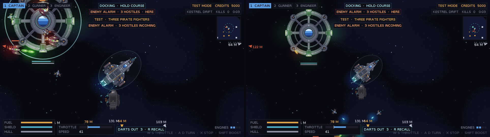
- Rymden ritas i tre fjärdedels storlek. Man ser en tredjedel längre åt varje håll.
- Text, mätare och knappar har kvar sin storlek.
- På en del skärmar går pixlarna inte jämnt upp i den storleken. Där jämnas bilden ut, och den blir lite mjukare.
Låset på en pod
Byggt 2026-11-15 efter skissen nedan. Så här ser det ut i spelet, i fyra steg:
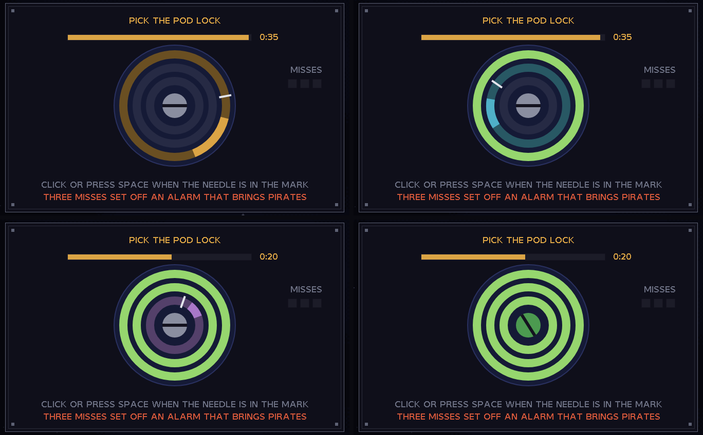
Skissen som godkändes:
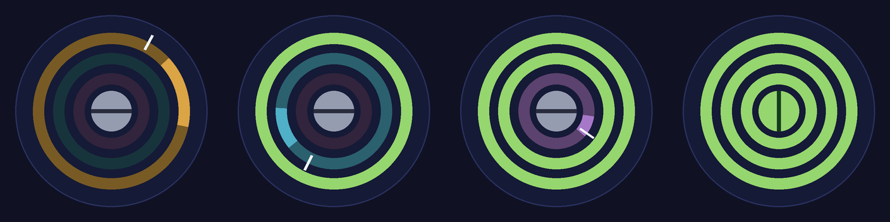
- Alla ringar syns hela tiden. Man tar en i taget, utifrån och in, så att man ser hur mycket som är kvar.
- Visaren och markeringen finns bara på ringen man arbetar med. En ring som är upplåst blir grön.
- När den sista ringen är upplåst vrids cirkeln i mitten ett kvarts varv och blir grön.
- Visaren går medurs på den yttersta och den innersta ringen och moturs på den mellersta.
- Reglerna är desamma som i dag: tre träffar, markeringen blir smalare och visaren snabbare för varje ring, och den tredje missen misslyckas.
Slots och uppgraderingar
- Hardpoints sitter utanpå skrovet och syns: vapen, fighter bay och pansar. Stora saker tar två.
- System slots sitter inuti: larm, scanner och liknande.
- Fler slots går att köpa, och kan hittas som sällsynt loot.
- Uppgraderingar ger posterna fler reglage, så de börjar enkla och växer.
| Uppgradering | Post | Vad den gör |
|---|---|---|
| Enemy alarm | Alla | Varnar för pirater. Nivåerna ger längre räckvidd, och till sist når larmet bordarna. |
| Scanner pulse | Engineer | Avslöjar allt nära skeppet en kort stund. Senare även loot, vakter och hur svårt ett mål är att borda. |
| Target scanner | Engineer | Visar exakt liv på andra skepp och stationer. |
| Fighter bay | Captain | Skickar ut Darts för hand. Senare startar de själva när larmet går. |
| Afterburner | Captain | Kort fartökning som drar bränsle. |
| Jump drive | Captain | Kortare laddtid och billigare hopp. |
| Tractor beam | Captain | Drar in lösa lådor och bärgar en bordare som hamnat utanför. |
| Point defense | Gunner | Skjuter ner inkommande raketer automatiskt. |
| Targeting computer | Gunner | Visar var du ska sikta mot rörliga mål. |
| Power core | Engineer | Fler energisteg att fördela. |
| Repair drones | Engineer | Lagar skrovet långsamt av sig själva. |
| Fuel tank | Alla | Rymmer mer bränsle, så ni når längre. |
Bordarnas utrustning
| Pryl | Vad den gör |
|---|---|
| Vapen och granater | Behövs mot vakter och kanontorn, och går att uppgradera. |
| Cargo pack | Du bär fler saker per vända. |
| Teleporter | Kortare laddtid mellan bordningarna. |
| Breaching charge | Spränger en låst dörr utan inbrottsspel, men väcker alla vakter. |
| Hacking kit | Ger längre tid i inbrottsspelen. |
| Deployable turret | Ett litet torn du ställer ut som håller en korridor. |
| Suit armor | Tål mer innan teleporten slår till. |
Stilen
- En pixelstil för hela spelet, ute som inne, alltid uppifrån.
- Dämpade färger som grund. Stål för era skepp, plommon för pirater.
- Stark färg betyder något. Bara glas, motorer, skott och loot lyser.
- Mörk kontur runt allt, och ljus som faller uppifrån.
- Hela skeppet vrids som en bild. Pixlarna ritas inte om i ett rutnät.
- Samma pixelstorlek överallt. Bildytan i skisserna är 640 × 360.
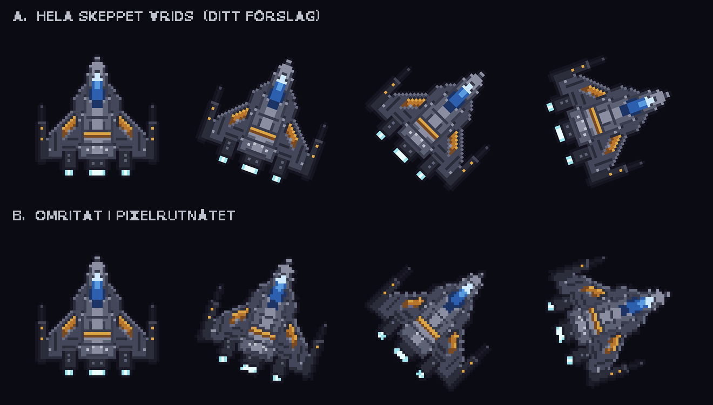
- Stål
- Plommon
- Ockra
- Glas
- Jonljus
- Syragrönt
- Glöd
- Rymd
Allt på sidan är ritat från grunden. Bilderna visar upplägget och tonen, inte färdig grafik.
Paus
- En pausknapp fryser världen för alla och visar vem som pausade.
- Tappar någon anslutningen pausas spelet först efter en stund, så att en svajig uppkoppling inte ger ständiga avbrott.
Första spelbara versionen
Alla tre posterna finns med från början, och det går att växla fritt mellan dem. En fregatt, en sorts pirat och ett vrak att docka med.
Därefter kommer bordningen, sedan inbrottsspelet, och sist uppgraderingar, stationer och hopp.
Framtida utveckling
- Faktioner med egna stationer och områden.
- Pirater som bordar er, där ni försvarar skeppet mot vågor i samma läge som bordningen.
- Paus och start som kräver allas godkännande.
- Att hoppa in mitt i ett pågående spel.
- Autopilot på lediga poster.
- Fler skeppsklasser som fungerar olika, till exempel Interceptorn.
Att bestämma
- Ska ni kunna hoppa tillbaka till gamla sektorer?
- Blir lootet kvar på platsen när någon teleporteras hem?